地政学
ハイデルベルクはライン＝ネッカー圏の研究都市で、フランクフルト、マンハイム、シュトゥットガルトを結ぶ南西ドイツの知識回廊にあります。米軍駐留の記憶も残り、欧州の安全保障と都市再編の影を読む場所です。
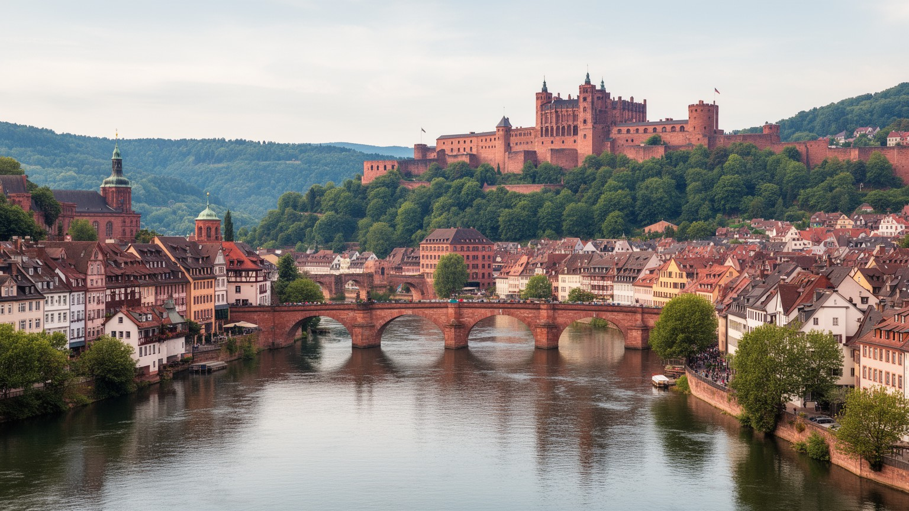
🇩🇪 ドイツ / バーデン＝ヴュルテンベルク州 / World City Atlas
古城と大学の絵になる町であると同時に、研究医療、出版、観光、宗教改革の記憶、米軍撤退後の再開発、住宅圧力、ネッカー川の地形が日常を形づくる都市です。
都市の骨格
ハイデルベルクは、ネッカー川の谷、赤い屋根の旧市街、丘の古城、ドイツ最古の大学という強いイメージを持ちます。一方で、病院、研究所、出版社、学生住宅、観光労働、旧米軍用地の再開発が、日常の都市を支えています。
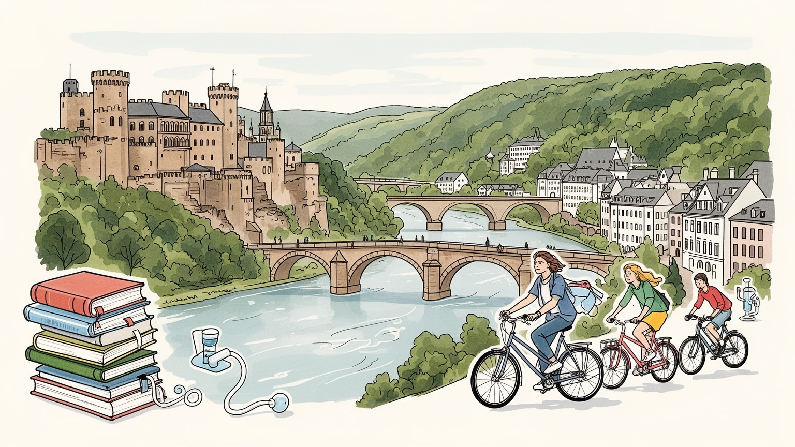
ハイデルベルクはライン＝ネッカー圏の研究都市で、フランクフルト、マンハイム、シュトゥットガルトを結ぶ南西ドイツの知識回廊にあります。米軍駐留の記憶も残り、欧州の安全保障と都市再編の影を読む場所です。
大学、大学病院、生命科学、研究機関、出版、観光、会議、行政が雇用を作ります。学生、研究者、看護職、ホテル従業員、清掃、飲食、交通、週市の小商いが景観と知識産業を日々支え、朝夕の街路でよく見えます。
大学都市の自由な気風、プロテスタントとカトリックの歴史、学生組合、哲学者の道、文学と出版、国際学生の生活が重なります。教会音楽、劇場、酒場、図書館が近く、学問と信仰の記憶が街路に夜の音として響きます。
旅行者は古城、旧橋、旧市街を歩き、住民は家賃、学生住宅、坂道、通勤、観光混雑、洪水リスク、暑熱と向き合います。子どもや高齢者の散歩、夜の学生街、買い物動線が公共空間の質を測り、通りを日々支えます。
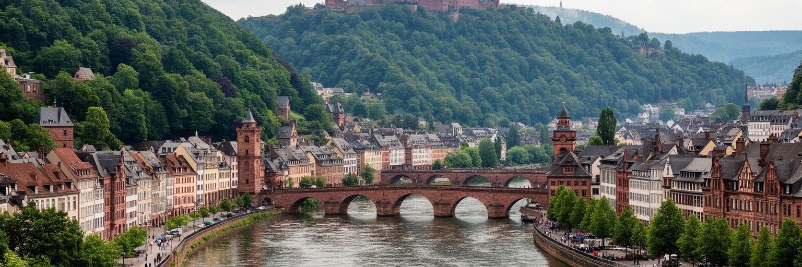
ハイデルベルクの都市形は、ネッカー川がオーデンヴァルトの谷を抜け、ライン平野へ開く場所に生まれました。川沿いの狭い平地に旧市街が伸び、南側の斜面に古城が立ち、北側には哲学者の道と住宅地が重なります。橋は移動の要であり、洪水の記憶は水辺の景観に静かに刻まれています。絵葉書のような旧橋と赤い屋根は、実際には谷地形、交通の制約、観光客の流れ、学生の通学、配送、消防、避難を同じ狭い空間に押し込む条件でもあります。川は都市を美しく見せますが、同時に湿度、霧、洪水、堤防、河岸利用をめぐる実務を生みます。丘の緑地は近い自然を与え、暑い季節には涼しさを支える一方、住宅地の拡大を抑える境界にもなります。ハイデルベルクを読むには、古城を見上げる視線だけでなく、川に沿って人と物がどう動き、どこで地形に止められるのかを見る必要があります。谷の美しさは、都市の魅力であると同時に、成長を慎重にする制約です。旧市街の通りが細いこと、観光バスをどこで受けるか、川沿いの自転車道をどう守るかも地形と切り離せません。水辺の眺望は公共財でありながら、住宅価格や店の賃料にも反映されます。だからこの都市の景観保全は、写真の構図を守る仕事ではなく、移動、住まい、防災、観光の均衡を探る都市政策です。谷の入口に立つことが、都市の自由と限界を同時に見せる場です。
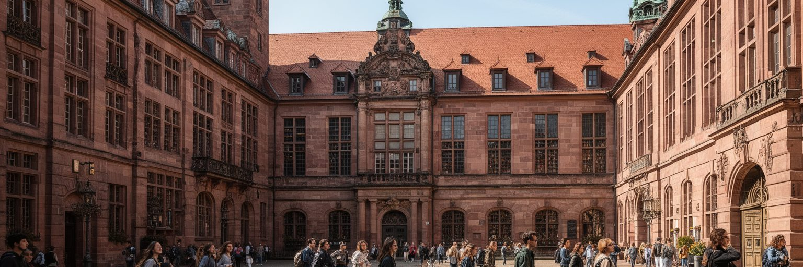
ハイデルベルク大学は、ドイツ語圏の学問史を代表する存在であり、都市の規模を超えた国際的な重みを与えてきました。講義室、図書館、研究室、学生寮、古い学生牢、教会、酒場が旧市街と近く、大学はキャンパスの中だけに閉じません。学期の始まり、試験、研究会、留学生の到着、病院実習、学会の開催が、街の宿泊、飲食、交通、住宅市場を動かします。大学都市の自由な空気は魅力ですが、学生数の多さは家賃と部屋探しの難しさも生みます。研究者や学生は国際的に入れ替わり、英語とドイツ語、専門知と地域生活が交差します。大学が長く続く都市では、建物の歴史だけでなく、知識を生む制度、資金、採用、実験倫理、図書館、事務職、清掃、食堂、保育の現場を見る必要があります。学問の名声は、教授だけでなく、日々の運営を支える多くの人によって保たれます。ハイデルベルクの大学性は、観光名所ではなく、都市の時間割そのものとして働きます。大学は周辺の研究所、企業、病院、学校と結び、卒業生の記憶は都市ブランドになります。学生新聞、地元紙、SNSの部屋探し投稿、講演会の告知は、研究都市の情報網です。食堂の列や語学学校の掲示は、教育が生活の細部まで入り込むことを示します。学ぶ人が去った後にも、図書館、研究記録、友人関係、夜のゼミ後に残るカフェの会話が都市の記憶として積み重なります。
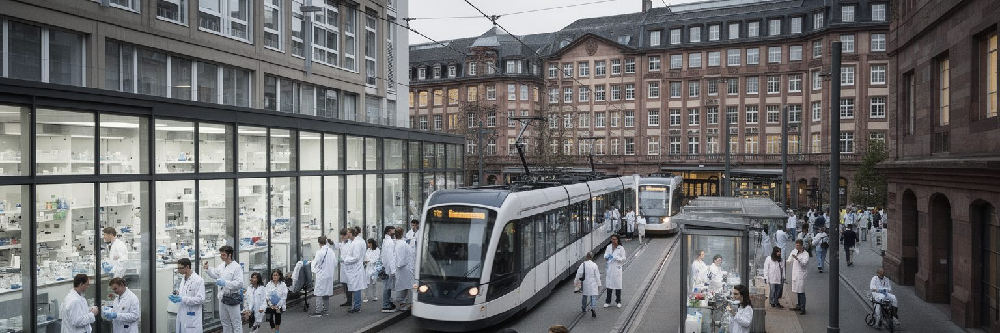
ハイデルベルクの現代的な経済を支える大きな柱は、研究医療と生命科学です。大学病院、がん研究、分子生物学、薬学、医療技術、研究支援企業が集まり、旧市街のロマンチックな印象とは別の実務的な都市を作ります。患者、家族、医師、看護師、研究者、検査技師、事務職、清掃、給食、救急、通訳が、医療地区の日常を動かしています。研究成果は国際的な論文や企業連携へ向かいますが、その出発点には病棟、倫理審査、データ管理、試薬の搬入、夜勤、感染対策があります。高技能職は都市の所得を押し上げる一方、医療と研究を支える現場労働の負担も大きいです。大学病院は雇用主であると同時に、地域住民にとって最後の医療拠点でもあります。生命科学都市を読む時には、知識産業の華やかさだけでなく、患者を受け入れる待合室、家族の不安、看護職の勤務、研究費の競争まで見る必要があります。ハイデルベルクの強さは、古い大学の権威と新しい医療研究が接続している点にあります。医療地区には救急車、トラム、研究棟、宿泊施設、家族のための短期滞在が集まり、都市交通にも独自の負荷をかけます。高齢化が進む社会では、こうした医療拠点の役割はさらに重くなります。研究都市の評価は、論文数だけでなく、患者と働く人にとって使いやすい都市であるかにも左右されます。病院の周辺に手頃な住まいと休める公共空間があることも、医療都市の質を左右します。
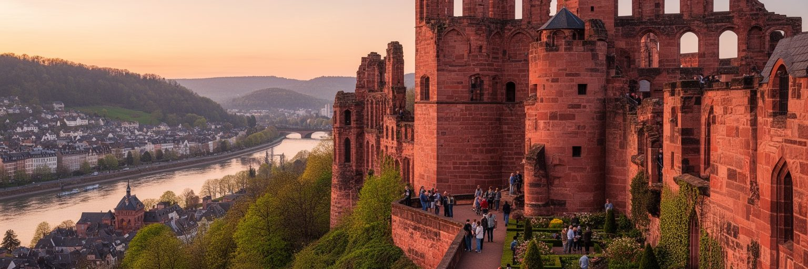
ハイデルベルク城は、都市の最も強い視覚記号です。丘の上の赤い砂岩、破壊と修復の跡、庭園から見下ろす旧市街と川は、ロマン主義的なドイツ像を世界に広めてきました。観光客はケーブルカーや坂道で城へ上がり、旧橋、聖霊教会、大学広場、ハウプト通りを歩きます。ですが観光経済は、写真の美しさだけで成り立ちません。ホテル、飲食、案内、土産物、清掃、警備、文化財管理、交通整理、多言語対応、トイレ、廃棄物処理が、訪問者の時間を支えています。観光は雇用と税収を生む一方、旧市街の店を住民向けから訪問者向けへ変え、家賃や混雑を押し上げます。城のライトアップや花火、夏の野外劇、クリスマスマーケットは夜の都市を華やかにしますが、警備、音量、帰宅交通、住民の睡眠も同時に調整します。団体旅行の波が大きい日は、狭い旧市街の歩道や公共交通に負担が出ます。観光客が増えるほど、住民が日常の買い物や通院を続けられる導線を守る必要があります。遺産を経済資源にする都市では、保存と生活の双方を計画する力が問われます。城へ向かう坂道の混雑や夜の騒音も、観光都市の現実です。ワイン、プレッツェル、学生向けの安い食事、広場の屋台は、観光の味覚と地元の昼食をつなぎます。焼き菓子の匂い、石畳に響く車輪、土産物店の明かりまで含めて、遺産は働く街の感覚として維持されています。
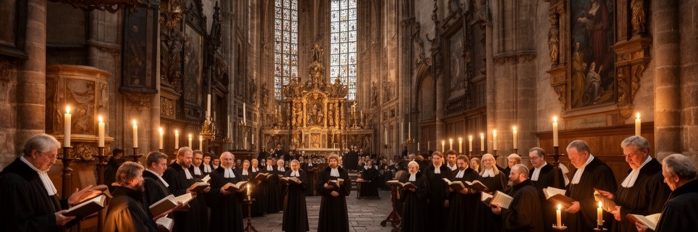
ハイデルベルクは、宗教改革と大学の歴史が重なる都市でもあります。聖霊教会や旧市街の広場、大学の講義空間には、神学、権力、出版、教育が結びついた時代の記憶が残ります。プファルツ選帝侯の政治、プロテスタントとカトリックの緊張、戦争と再建は、建物の石や街路の配置に影を落としてきました。宗教は過去の制度だけではなく、現在も教会音楽、礼拝、福祉、移民コミュニティ、大学の倫理議論に関わります。学生と研究者が多い都市では、信仰は私的な祈りだけでなく、公共討論、歴史教育、葬送、難民支援、地域の孤立対策にもつながります。ハイデルベルクの文化を語る時、古城と詩だけに寄せると、宗教が都市の制度と知の形をどれほど作ってきたかが見えにくくなります。宗教改革の記憶は、単に教派の勝敗ではなく、読書、印刷、教育、権威への問いを広げた経験でもあります。今日の教会は観光名所であると同時に、合唱とオルガン、相談、寄付、追悼、地域の集まりの場でもあります。劇場、室内楽、学生オーケストラ、文学イベントが旧市街の夜に重なり、信仰と芸術は静かな観光資源にとどまりません。国際学生や移民が増えるほど、信仰の風景は多層化します。古い宗派の記憶と新しい多文化の生活を同じ広場で扱えるかが、大学都市の寛容さを測ります。祈りの場は、今の孤立や不安に応える社会的な場所でもあります。
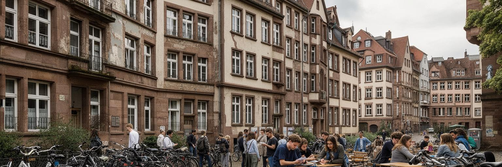
ハイデルベルクの日常は、学生と研究者の入れ替わりによって動きます。講義期間には自転車、トラム、カフェ、図書館、食堂、共同住宅が混み、休暇には街の速度が少し変わります。大学都市の若さは活気を生みますが、住宅市場には強い圧力をかけます。短期滞在の研究者、留学生、医療研修者、若い家族、高齢者、観光客向け宿泊が、同じ限られた部屋をめぐって競合します。古い建物は魅力的でも、断熱、バリアフリー、家賃、騒音、共有設備の問題を抱えやすいです。学生寮は重要な受け皿ですが、需要に追いつかない時、郊外や周辺都市からの通学が増えます。部屋探しはSNS、大学掲示板、友人紹介、地元紙の小さな広告まで動員する生活技術になります。夜にはウンテレ通りの酒場やネッカー川辺に学生が集まり、翌朝には子どもの通学、高齢者の買い物、病院への通院が同じ道を使います。住まいの不安は、学業や研究の集中、アルバイト時間、友人関係、心身の健康に響きます。知の都市は、学ぶ人が安心して住める時に初めて持続します。学生が中心部から押し出されれば、夜の図書館、アルバイト先、友人との支え合いから遠ざかります。手頃な住宅を増やすことは、大学の国際競争力と地域の包摂を同時に守る条件です。鍵束の音、共同台所の匂い、坂を上る自転車の息切れまでが大学都市の生活感です。
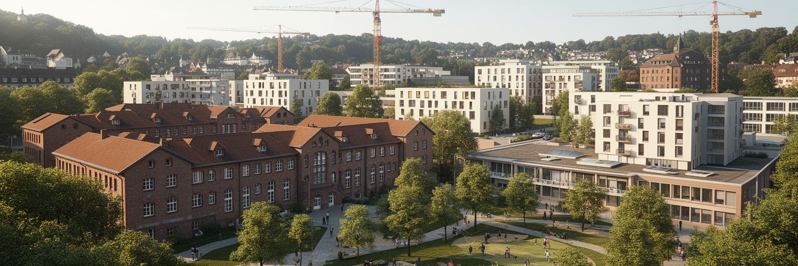
ハイデルベルクには、冷戦期から続いた米軍駐留の記憶があります。司令部、住宅、学校、倉庫、訓練施設は、都市の日常に英語、米国式の消費、基地労働、警備、国際関係を持ち込みました。米軍の撤退後、広い用地は住宅、教育、研究、商業、公園、文化施設へ転換され、都市計画の大きな課題になりました。旧基地は、普通の空地ではありません。汚染調査、道路接続、建物の再利用、歴史の扱い、近隣住民の参加、家賃の設定、学校と保育の配置が必要になります。軍事インフラが消えると、都市はその跡をどのような公共性へ変えるかを問われます。新しい地区は住宅不足を和らげる可能性を持ちますが、価格が高ければ社会的な効果は限られます。米軍の記憶は、ハイデルベルクが単なる古い大学町ではなく、戦後欧州の安全保障と深く関わった場所であることを示します。再開発を読むことは、冷戦の土地を市民生活へ戻す過程を見ることでもあります。過去の軍用地が、次世代の住まいと公共空間に変わるかどうかが都市の成熟を測ります。広い敷地は一度にまちを変える力を持つため、交通、学校、緑地、商店、医療を同時に計画しなければなりません。基地の塀が消えた後も、記憶の残し方が問われます。過去を消すのではなく、市民が使える土地へ読み替えることが、この再開発の核心になります。新しい街区が旧市街とは違う生活の余白を作れるかも注目されます。
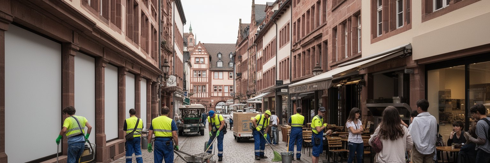
ハイデルベルク旧市街は、観光客にとって歩きやすい歴史的空間です。ハウプト通りには店、カフェ、書店、教会、大学施設、広場が続き、古城への視線が街歩きを演出します。しかし日常の旧市街は、朝の配送、清掃、厨房、ホテルの客室整備、学生のアルバイト、警備、路面の修理、廃棄物回収、住民の買い物で成り立ちます。歴史的な建物は雰囲気を作りますが、店舗の賃料、騒音、観光客の集中、夜間の飲酒、短期滞在、バリアフリーの難しさも生みます。住民が暮らせない旧市街は、いずれ舞台装置に近づいてしまいます。ハイデルベルクの魅力を保つには、観光向けの消費と地元の生活が完全に分かれない状態を守ることです。マルクト広場やノイエンハイムの週市では野菜、チーズ、花、パンが並び、学生の安い昼食、子どものおやつ、高齢者の日々の買い物が同じ店先で交差します。地元紙やラジオ、SNSの投稿は、道路工事、試合、祭り、交通遅延、閉店情報をすばやく広げます。パン屋、薬局、郵便、学校、診療所、安い食堂、静かな路地が残るからこそ、旧市街は生きた都市でいられます。混雑を避ける時間帯管理、配送ルール、イベントの音量、夜間の安全は、住民と来訪者の双方に関わります。誰もが歩きたい街路であるほど、働く人が休める場所も必要です。コーヒー、揚げ物、雨に濡れた石畳の匂いが、観光の絵を生活の場所へ戻します。
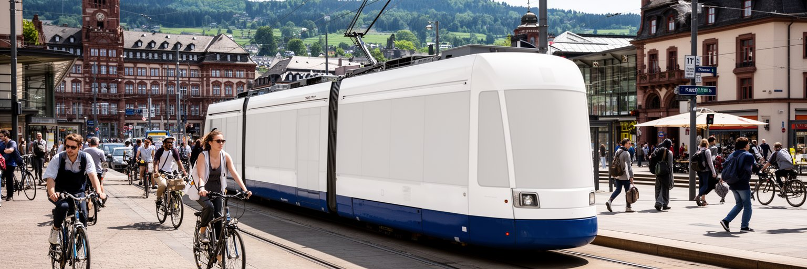
ハイデルベルクは人口規模だけを見れば中小都市ですが、交通の上ではライン＝ネッカー圏の一部として動きます。マンハイム、ルートヴィヒスハーフェン、シュパイアー、ダルムシュタット、フランクフルト空港、シュトゥットガルト方面との結びつきが、通勤、研究交流、観光、企業活動を支えます。中央駅、路面電車、バス、自転車道、歩行者空間は、旧市街の狭さと郊外の生活をつなぎます。学生や病院職員は時間帯によって大きな流れを作り、観光客は駅から旧市街と古城へ向かいます。車を減らす政策は環境と生活の質を高めますが、配送、介護、障害者の移動、郊外からの通勤をどう扱うかが課題になります。ネッカー川と丘の地形は、道の選択肢を限り、自転車や徒歩にも坂と橋の制約を与えます。ハイデルベルクの移動を読むには、古い街並みの歩きやすさだけでなく、研究地区、病院、住宅地、旧米軍跡地、周辺都市を結ぶ広域の時間表を見る必要があります。小さく見える都市ほど、外との接続によって毎日を成り立たせています。交通は観光の便利さだけでなく、学び、治療、介護、仕事へ届く権利でもあります。駅前の再開発や自転車道の改善は、都市の環境目標にも関わります。ですが乗り換えが増えれば、夜勤や通院の負担は大きくなります。移動の公平性を考えることが、研究都市の生活の質を支えます。観光客の流れと住民の通勤を分けすぎない工夫も求められます。
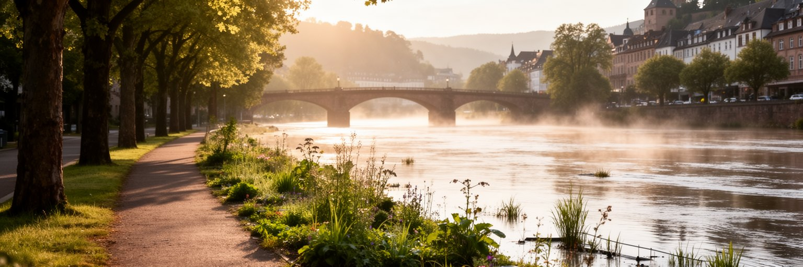
ハイデルベルクは比較的穏やかな気候の都市として知られ、春の花、夏の川辺、秋の斜面、冬の旧市街が観光の季節感を作ります。ネッカー川沿いの散歩道や丘の森は、住民の健康と余暇を支える身近な自然です。ネッカーヴィーゼではピクニック、読書、子どもの遊び、学生のフリスビー、ジョギングが重なり、地域スポーツの練習や週末の応援も日常の音になります。しかし気候変動は、この穏やかな印象を変えつつあります。夏の熱波は石畳と密な旧市街を暑くし、高齢者、屋外労働者、学生、観光客に負担をかけます。強い雨や洪水は川辺の施設、地下空間、交通、文化財を脅かします。緑地と水辺は涼しさを生みますが、その近くに住めるかどうかには所得差もあります。気候適応は、堤防だけでなく、木陰、冷房避難所、雨水管理、公共交通、建物改修、病院の備え、観光客への案内まで含みます。美しい川辺は、都市の贅沢な余白ではなく、暑さと雨に向き合うインフラでもあります。古い建物の断熱改修は景観規制と衝突しやすく、冷房の導入にもエネルギーと費用の問題があります。川辺の利用を増やすほど、洪水時の撤収や警告の仕組みも必要になります。芝の湿り、川風、夕方のバーベキューの匂い、遠くの拍手は、気候と余暇が同じ場所にあることを教えます。木陰の多い道、涼める公共施設、雨を逃がす舗装は、これからの歴史都市に必要な設備です。
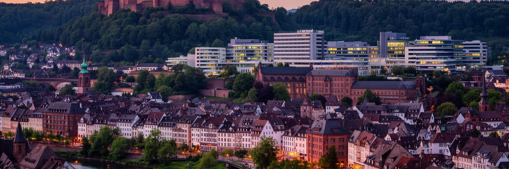
ハイデルベルクは、古城、旧橋、学生の街、詩的なドイツという印象で世界に知られています。その印象は間違いではありませんが、都市を十分には説明しません。ネッカー川の谷が成長を制約し、大学と病院が雇用を作り、研究と出版が知識を外へ運び、観光が旧市街を変え、米軍跡地が新しい地区へ転じ、住宅不足が学生と住民を悩ませます。宗教改革の記憶、教会の福祉、国際学生、医療現場、清掃や飲食の労働、洪水と暑熱への備えは、古城の眺めと同じ都市の一部です。ハイデルベルクの重要性は、巨大な金融センターや首都機能ではなく、文化的な象徴と知識産業、暮らしの小さな課題が高い密度で結びつく点にあります。旅行者が旧橋から城を見上げる時、その背後には病棟の夜勤、研究室の実験、学生の部屋探し、観光客を迎える現場、川辺を守る都市計画があります。さらにサッカーやバスケットボールの試合、学生合唱、地元ニュース、SNSの注意喚起、市場の買い物、夜の酒場、子どもの校外活動、高齢者の散歩が同じ地図に入ります。古城の写真から一歩進み、駅、病院、学生寮、旧基地、川辺の堤防まで歩けば、都市の持続力がどこで作られているかが分かります。ロマンチックな景観を入口に、知識、信仰、労働、住宅、気候、余暇を同じ地図へ置き直すことが、この小さな学術都市を読む意味です。